| 概要 | 情報 | ステージ攻略 |
| 地図 | テクニック | モナモナ攻略へ |
| 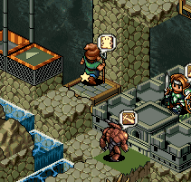 ゲームを開始する前に、時計の位置に待機するようSユニットに指示を出してください。それから、ゲーム開始です。 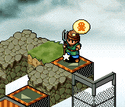 時計を取ったら、上の画像の位置に待機するよう指示を出してください。そして、無事移動したら、ユニットの横の草原に家を建ててください。 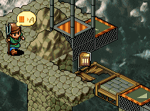 家を建て終わったら、上の画像にある壊れた橋を修理するように指示を出してください。ここで、ユニットがすぐにエレベーターに乗れなかった場合、ほぼ失敗です。 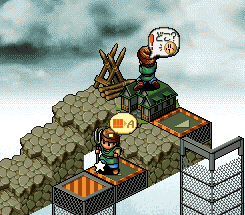 家から生まれてきたSユニットには、上の画像のように家の隣に柵を作らせます。この柵はDF：1 で作ってください。 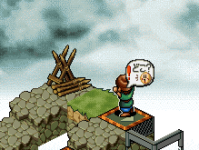 柵を作ったら、さらに家を壊すように指示を出します。そして、家を壊した後、同じ場所に家を建てるように指示を出してください。これで、後々の時間短縮になります。 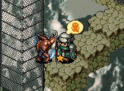 家を建てたら、そのユニットには上の画像の位置に待機してもらいます。見てのとおり、生け贄です。 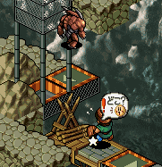 Mユニットが生け贄となっている間に、橋の修理を指示したSユニットには、橋の上に柵を作ってもらいます。当然、柵のDFは1です。 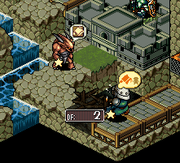 柵を作ったSユニットには、次に城の側にある柵を壊してもらいます。ただし、DF：5以下になったら壊すのをやめてください。 そして、ここで上に作った家から新たなSユニットが生まれるのを待ちます。 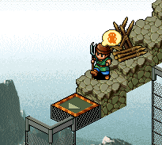 生まれてきたSユニットには、上の画像のように家へ戻れないように柵を作ってもらいます。当然、DF：1で。 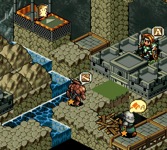 柵を作り終わったら、このSユニットには上の画像の”待機の旗”が立っている位置に待機してもらいます。 ここで、いったんセーブすると、何度もやり直せて便利です。 待機の指示を出したら、怪獣の行動をしっかり監視してください。そして、画像のように「追跡」マークになったらMユニットに柵を壊すように指示を出します。 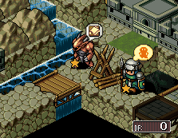 最後に橋を作り、さらに再度、上の画像のように柵を使い怪獣をやりすごします。怪獣が赤国のMユニットと遊んでいる(?)間に自国の城の前にある領土に家を作ればクリアです。 ただし、タイミングによっては怪獣が橋の上で赤国のユニットと戦う場合があるので、セーブ・ロードを繰り返して何度も挑戦してください。また、赤国のユニットをぎりぎりまで動かさないようにするため、オトリのSユニットが怪獣にやられ、Mユニットを「追跡」するのを確認してから橋を架けるなど、工夫してください。 |
| 概要 | 情報 | ステージ攻略 |
| 地図 | テクニック | モナモナ攻略へ |